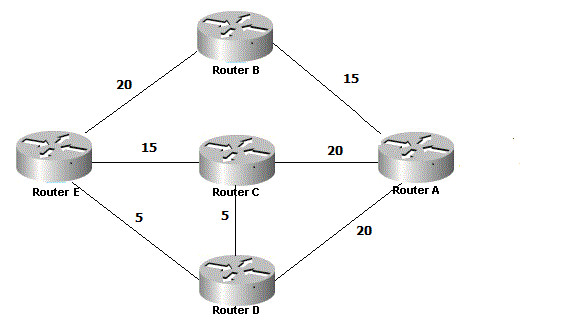

Link to presentation Here
Comes from the Dijkstra's best route algorithm. Finds the shortest path first, uses accumulated cost along a path from source to destination to determin a path.The Link-state algorithm is a global routing algorithm, this means that it has global knowledge about the network (nodes, edges, and cost) before it preforms the calculation.To get the knowledge of the network nodes send out a Link-State broadcast which sends a packet to all other nodes in the network containing the identities and costs of the attached links. It is an iterative algorithm and after K iterations the least-cost path to K nodes are known. And among all the least-cost paths to all destination nodes, these K paths will have K smallest costs.Link-State has an order of complexity of n2, this is because during the first iteration we must search though n nodes, and during the second we must search though n-1 nodes, and so on for n iterations. When this is done the total number of nodes to search is n(n+1)/2.EXAMPLE:
For this example the following notation will be used
D(v): Cost of the least-cost path from the source node to the destination v as of this iteration.p(v): Previous node (neighbor of v) along the current least-cost path from the source to v.N': Subset of nodes; v is in N' if the least-cost path from the source to v is definitively known.
In this example we will try to go from router B to router C following the Link-State (or Dijkstra's) algorithm. Starting at router B we will initalize and look at the least-cost paths from B to it's neighbors. These are set to 20 and 15 for E and A respectivly. Routers C and D are set to infinity because they do not connect to router B. In the first iteration we will look among those nodes that have not yet been added to N' and we will try to find the node with the least cost also the node with the least cost at the end of the previous stage. Router A is the one with the least cost with a cost of 15, so A is added to set N'. This we update D(v) for all the nodes v. Then we add the connected nodes to v (router A) router C and router D both with a distance of 20. Currently the shortest path to router C is B->A->C with a total of 35. Since C and D are tied with distance they will both broadcast along their edges.During the third iteration router C and router D connect to eachother with a value of 5 while router C connect to E with a value of 15 and D connects to E with a value of 5. With these connections a shorter path becomes obvious to us following B->E->D->C for a total of 30. At this point all the nodes are connected and can be added to N'.
Finally for a network where link costs are equal to the load carried on the link there arises some problems. If the links are circular then each time the LS algorithm is run the nodes would switch between clockwise and counter clockwise, due to the presence of their own traffic counting as weight on the path. There are two ways to prevent oscillations on the network, one is to have LS not take into account the traffic on a link, but that is not feasible since the goal of routing is to avoid congestion. Second we could simply ensure that the routers do not run the LS algorithm at the same time. To do this we have each router randomize the time the send out a link advertisement to avoid synchronizing.
Worked on with Akash